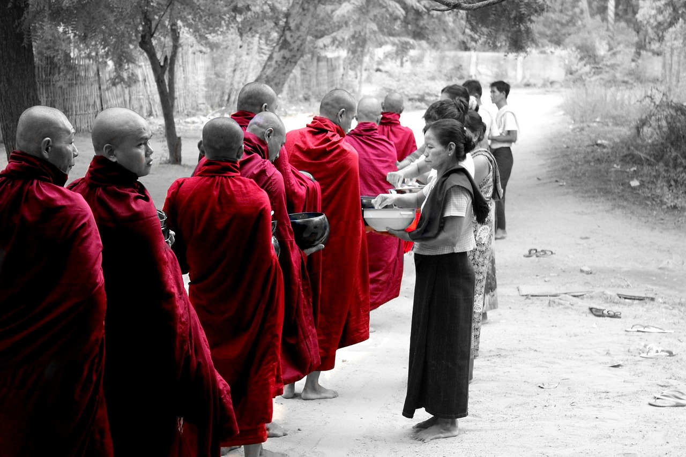

供養，究竟誰養誰？
濟群法師
寺院每天過堂之前，都要誦供養偈，以三德六味供養三世一切諸佛，供養諸尊菩薩摩訶薩，並令法界有情普同供養。而在初一、十五，寺院還要特別隆重地上供，以種種美妙飲食供養諸佛菩薩。
那麼，是佛菩薩需要這些東西嗎？如果我們不供養，他們就會忍飢挨餓嗎？顯然不是。通過供養這一方式，既是為了表達我們對佛菩薩的恭敬，也是體現我們對佛菩薩的報恩之心。
佛陀教導我們，每一位佛弟子，不僅要「知恩」，更要懂得「報恩」。恩有四重，分別是三寶的恩德、父母的恩德、國土的恩德、眾生的恩德。因為有佛陀出世，我們才能了知人身蘊含的巨大意義，才能認識真理、擺脫痛苦。這種大恩大德，我們傾盡所有也報答不盡。
或許有人會說，既然報答不盡，且佛菩薩並不需要，那我們又何必多此一舉？須知，供養是積集福德資糧的捷徑。倘能以至誠懇切之心供養諸佛，在報答佛恩的同時，更在成就自身修行。
廣修供養，即廣泛修習供養，沒有尊卑之分，沒有親疏之別。我們不僅要供養諸佛菩薩，還要供養世間一切眾生。若能常行佈施，廣修供養，努力耕耘恩田、敬田、悲田，福報自然源源不斷。事實上，這是最好的投資和儲蓄方式，是任何人無法佔有、無法奪去的財富。
此外，供養還具有滅除慳貪的作用。慳貪，就是吝嗇、小氣。佛菩薩是我們最為景仰的楷模，供養時，必盡己所能準備精良供品。所以，每一次供養，都是對慳貪的削弱。
貪，是三毒之一，也是凡夫最主要的特徵之一。因為貪著，我們往往捨不得將那些貴重或自己喜愛的物品贈予他人。電器要用舊了才肯送掉，衣服要過時了才肯給人，因為它們舊了、過時了，所以對它們的貪著就不如開始那麼強烈了，甚至完全沒有貪著了。
這種送，與其說是佈施，不如說是處理垃圾，自然也無法得到佈施的全部利益。如果我們反其道行之，將貴重物品或心愛之物作為供養，久而久之，對物質的貪著自會逐漸減少。所以，供養也是破除慳貪、淡化執著的途徑。